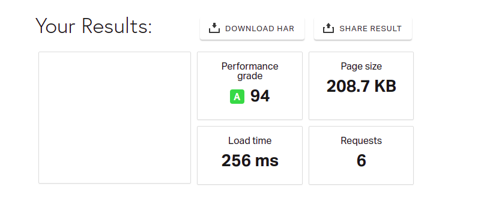
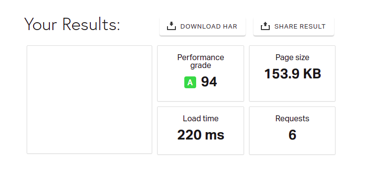

Utilize la herramienta :https://tools.pingdom.com/
RESULTADOS:
Primera Web Imagenes sin optimizar
link utilizado : https://alexzarazuaa.github.io/web-interface-design/Unidad8.0/img04/index.html

Segunsa Web Imagenes optimizadas
link utilizado : https://alexzarazuaa.github.io/web-interface-design/Unidad8.0/img04/index_2.html
